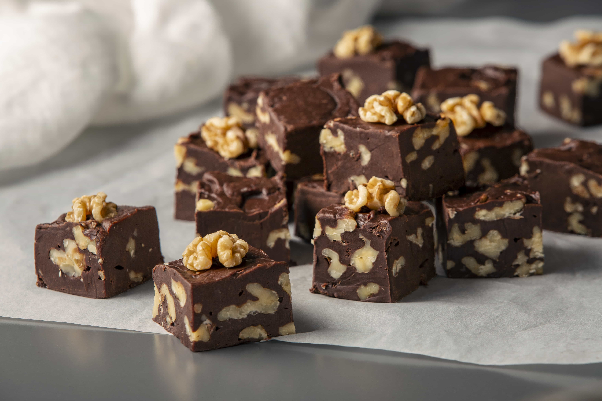

Çikolota Küpleri
Çikolota ve Şam Fıstıklı Tadımlıl lezzetler... Yanlızca 4 malzeme ile hazırlanan çikolata küpleri,renkli kağıtlarda veya kürdan batırılarak servis edilir. Özellikle kalabalık sofralrda yer verilen çikolata küpleri, doğum günü gibi özel etkinliklerde de sunulabilir.
Tarif:Rükiye Beyza Sarıkaya